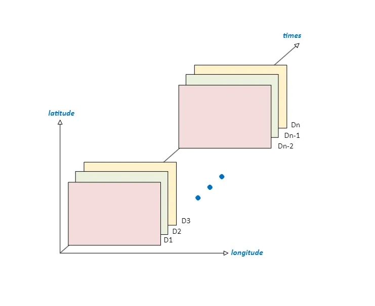
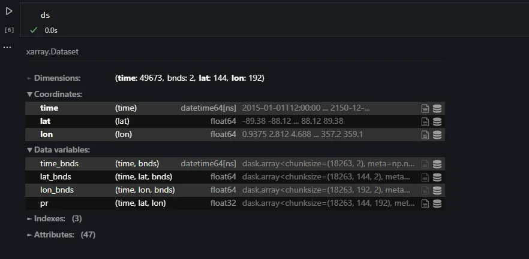
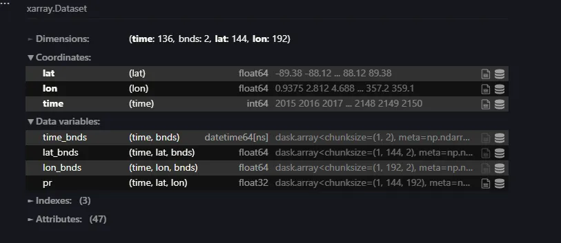
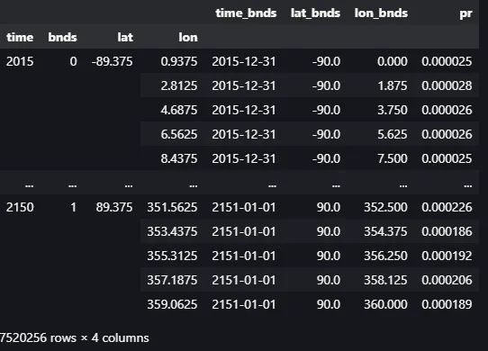

!pip install xarrayIntroduction to Climate Data
With the evolution of computational technology, climate studies have greatly benefited from these advancements. In the past, analyzing climate data could take hours, days, or even weeks due to the sheer size of the datasets and limited computational resources. Technology advancements have made this procedure faster and more efficient. The emergence of powerful computing equipment and adaptable programming languages such as Python has greatly reduced computation times, making climate data analysis more accessible and efficient.
Climate data is often released in the form of NetCDF (Network Common Data Form) files, a widely-used format in climate science for storing large, multidimensional datasets. For example, reanalysis datasets like ERA5, produced by the European Centre for Medium-Range Weather Forecasts (ECMWF), are distributed in NetCDF format. Similarly, future climate projections from the Coupled Model Intercomparison Project Phase 6 (CMIP6) are also provided as NetCDF files.
NetCDF files are designed with a structure that allows the storage of multiple variables (e.g., temperature, precipitation, humidity), each of which can have several dimensions — typically time, latitude, longitude and pressure level. This structure is highly efficient for managing large datasets, as it allows for easy access to specific variables or subsets of the data. Figure 1 below illustrates a typical NetCDF file structure, showing how variables like temperature and precipitation are organized along the axes of time, latitude, and longitude.

Reading NetCDF files with Python
Numerous libraries are available for reading NetCDF files, but xarray stands out as the most popular choice. It provides a wide array of functions for manipulating climate data efficiently. Thanks to its integration with NumPy and Pandas, xarray offers considerable speed and flexibility, making it an essential tool for climate data analysis in Python.
In this example, I will demonstrate using output files from a Global Circulation Model (GCM). Specifically, I will show the precipitation output from the ACCESS-CM2 model, covering the period from 2015 to 2151 under the SSP5–8.5 scenario.
To get started, we need to ensure that xarray is installed on our system. In this example, I will show in a Jupyter Notebook environment.
Once installed, we can import the library just like any other Python library.
import xarray as xrNetCDF files can be read individually or all at once using functions provided by xarray.
To read NetCDF files individually, we can use the following script:
ds = xr.open_dataset("file_directory\pr_day_ACCESS-CM2_ssp585_r1i1p1f1_gn_20150101-20641231.nc")However, some outputs may be provided in separate files corresponding to specific periods. While we can read them all at once, it’s important that these files are stored in the same folder.
ds = xr.open_mfdataset("folder_directory\*.nc")The overview of the file that we read is shown in Figure 2.

Referring to Figure 2, we can observe that this dataset encompasses 49,673 days, covering the period from January 1, 2015, to December 31, 2150. It includes a total of 14,976 grids, represented by a grid structure of 144 latitude and 192 longitude points. The precipitation data is indicated by the variable pr.
Simple Data Manipulation
Data Selection
Let’s get started with a simple manipulation. If we need data for a specific period (let’s say from 2015 to 2020 in this example), we can easily select it from the file using the following script:
d15_20 = ds.sel(time = slice("2015", "2020"))The script above allows us to select data from January 1, 2015, to December 31, 2020. However, if we need data for specific dates, we can easily achieve this by adding the desired dates in the format “yyyy-mm-dd”.
d15_20 = ds.sel(time = slice("2015-01-01", "2020-12-31"))It’s not just time that we can filter; this approach can be applied to all dimensions. For example, if we need data for a specific grid (a pair of latitude (-89.375) and longitude (0.9375) coordinates), we can also use the .sel() function to extract that information.
ds_latlon = ds.sel(lat = -89.375, lon = 0.9375)Simple Calculations: Mean, Min, Max, and Conversion to DataFrame
In climate studies, particularly those related to precipitation, several common indices are used to gain insights from the data. For each grid, we can calculate indices such as the maximum daily precipitation (Rx1day), minimum daily precipitation (Rn1day), and the mean precipitation using functions provided by xarray. These calculations can be separated into individual datasets for easier analysis.
For Rx1day, we can obtain it by:
ds['time'] = ds['time'].dt.year
rx1day = ds.groupby('time').max(dim='time')Rn1day:
rn1day = ds.groupby('time').min(dim='time')Mean:
mean_pr = ds.groupby('time').mean(dim='time')These datasets are summarized in Figure 3.

Converting to Pandas DataFrame
The Pandas DataFrame (hereafter referred to as df) is one of the most powerful tools for data analysis, offering numerous functions to manipulate and visualize data effectively. However, it is not recommended to convert large datasets into a DataFrame, as this can consume a significant amount of memory.
To convert a ds into a Pandas DataFrame df, we can simply use the .to_dataframe() function provided by xarray.
rx1day_df = rx1day.to_dataframe()